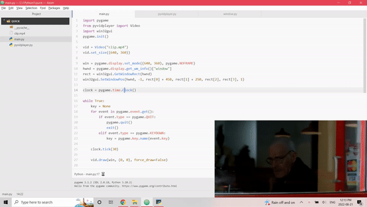
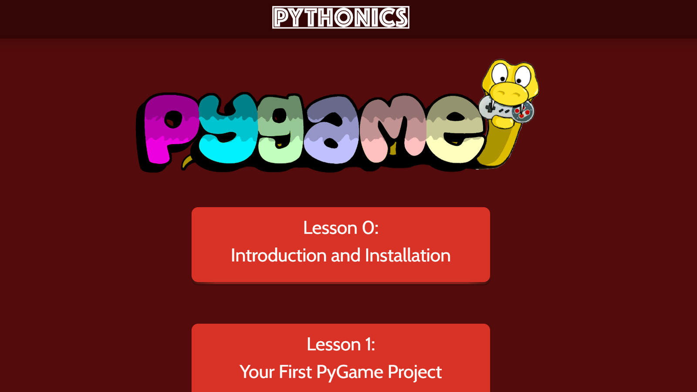
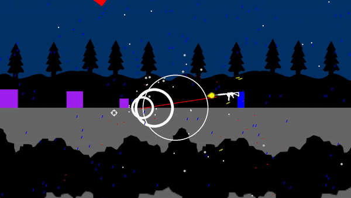
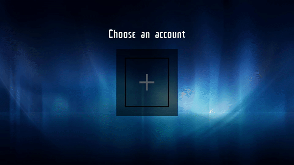

Anray Liu
Welcome to my website that I made from scratch with HTML and CSS! Here, I'll be showing off some of my best tech projects.
Game Dev Club
I'm the leader of the Game Dev Club at my school, where me and my friend teach people how to make their very own video games!
Pyvidplayer
Pyvidplayer is a small module I wrote that allows people to easily play video files in Python. It fills a gap no other library covers, as it's reliable, simple, and efficient. Since then, the module has garned several hundred downloads. Check it out yourself on my github page: https://github.com/ree1261/pyvidplayer.
Course Design
I've been using a library called Pygame for several years now, so I thought I would design a short course to teach new users. The course can be found at https://pythonics.org/pygame.html.
Canadian Computing Contest
I was awarded a certificate of distinction for Waterloo's Junior Canadian Computing Contest.
Squaresplosion
Check out my epic game!
Blue Movies
This was when I moved away from making video games and more into practical applications. Blue Movies was my first attempt at making a professional user interface.
Long Term Computer Enthusiast
I've been coding for several years now, experimenting with all sorts of languages, and posting finished experiences on my github account. Naturally, I'm familiar with many computer concepts such as interpolation, scraping, threading, and more!